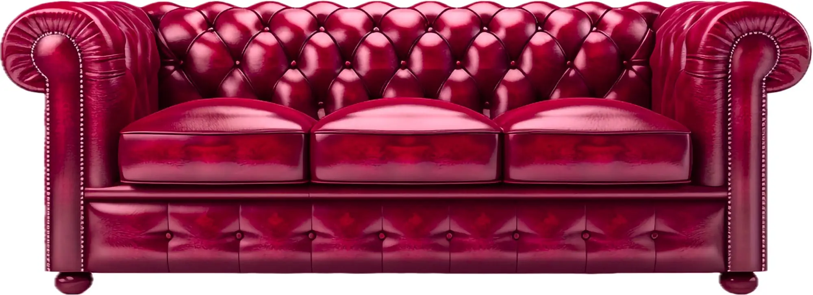
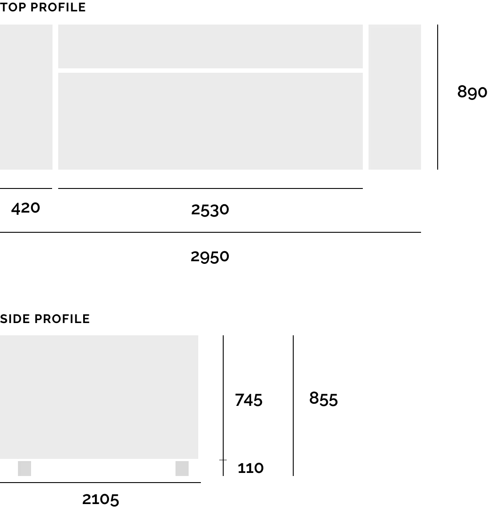

Sinner
Space for nonguilty pleasure
Leatherworking
Sinner uses Victory Horsehide leather known for its exceptional durability and quality, often used in the manufacturing of high-end leather goods such as jackets, bags, and accessories. This premium leather is sourced from horsehides, which are known for their strength and unique grain patterns. Victory Horsehide is prized for its ability to develop a beautiful patina over time with proper care, making it a popular choice among leather enthusiasts and connoisseurs. It's the most expensive leather in the world.
Woodworking
Sinner uses teak for all woodworking. It is a tropical hardwood that is known for its durability, strength, and resistance to moisture, rot, and insects. This makes it an ideal choice for outdoor furniture, boat building, and other applications that require a long-lasting and weather-resistant material. Teak is also valued for its attractive grain pattern and rich, golden-brown color, which can develop a silvery patina over time when exposed to the elements.
Dimensions
Dyeing
Sinner is hand-dyed with traditional and time-consuming technique that involves applying dye to leather using a brush or sponge. This technique allows for a high level of customization and attention to detail, resulting in a one-of-a-kind leather product. Hand dyeing is typically only used for high-end leather goods such as designer handbags, wallets, and shoes. Our sofas are the first in the world made with 100% hand dying.
Sinner
23,250 USD
- Victory Horsehide leather
- 100% teak feet
- Handcrafted in Kajaani
- 25 year quarantee
- 1-2 month delivery